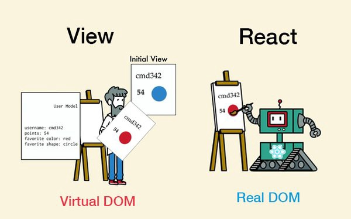
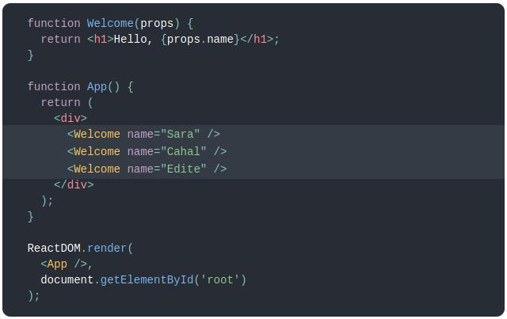
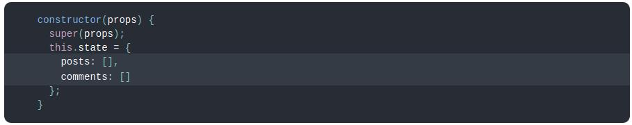

React, също срещан под наименование ReactJS е JavaScript библиотека, използвана за изграждане на потребителски интерфейси. React играе изключително важна роля в изграждането на модерни уебсайтове и уеб приложения. Познат в Angular и Meteor e така нареченият стил на реактивното програмиране. При него е характерно, че промяна на данните води до пререндериране на UI-я. От тази методология се предполага че произлиза и името на ReactJS. За разлика от Angular, ReactJS не е framework. React може да се използва като основа за разработката на SPA или мобилни приложения. За пример едни от най-големите компании, които освен че използват React, също така го и разработват, са Facebook и Instagram. Към момента React има над 147 хиляди звезди в GitHub.
А сега малко за това откъде е тръгнало всичко....
ReactJS е създаден през 2011-та година след като разработчиците във Facebook започнали да се сблъскват с
известни проблеми. Прототипната версия се казвала FaxJS. С увеличаване на екипа и поддържаните свойства
на Facebook Ads, процесът на разработка се забавял. След известно време поддръжката на кода станала
изключително трудна, а разработката на нова функционалност – свързана с каскадни промени по
съществуващия код. Решението, с което Facebook излезли било преработка на прототипната версия и
вкарването й в употреба, вече под наименованието React. Човекът, работил по това е Jordan Walke.
Следващата стъпка в историята идва след като Instagram пожелали също да използват новата технология. При
тези обстоятелства, Facebook трябвало да разкачат зависимостите на React от Facebook и да отворят кода
на библиотеката. Това се случило през май 2013-та година.
През 2013 се ражда и ReactNative като проект за вътрешен хакатон във Facebook. Две години по-късно
излиза първата му официална версия.
С времето се правели все повече интеграции с езици, технологии и други библиотеки. Популярността на
React растяла и до днес се използва от множество големи копании.
Както вече споменахме - React е удобен за създаване изгледа на уеб и мобилни приложения. Главните му цели са да предоставя бързина, мащабируемост и леснота за използване. Библиотеката позволява на разработчиците да съдават големи приложения, променящи данни без да презареждат цялата страницата, а само променените компоненти. Това се случва посредством така нареченото виртуално дърво, за което ще разберем след малко.
Виртуалното дърво - Virtual DOM(VDOM) е концепция, въведена в някои JavaScript библиотеки, включително
React, която се изгражда над браузър API-тата.
Идеята ѝ тук е да държи виртуална версия на истинския DOM в паметта и да се
синхронизира с него чрез ReactDOM библиотеката например. Този процес се нарича
reconciliation. По този начин не се грижим за ръчна промяна на DOM елементите и прихващане
на някои събития, а единствено оказваме в какво състояние(state) искаме те да бъдат.
Библиотеката се грижи за останалото. Към момента с React 16 се използва Fiber като reconciliation
engine.

Едно от главните неща в React е начинът, по който се движат данните и събитията между компонентите.
Данните винаги се движат в посока потребителски данни -> родителска компонента -> дъщерна компонента,
а потокът на събития съответно е в обратен ред.
 Главна структурна концепция в React е тази за използване на компоненти.
Вместо изкуствено да се разделят технологиите чрез разделяне на логиката и маркъп частта в отделни
файлове, в React работата се разделя между слабо зависими помежду си части, наречени компоненти. Те са
като блокчета лего, които сглабят една цялостна страница или съответно приложение. Всяко „блокче лего“ е
малко преизползваемо парче код.
Главна структурна концепция в React е тази за използване на компоненти.
Вместо изкуствено да се разделят технологиите чрез разделяне на логиката и маркъп частта в отделни
файлове, в React работата се разделя между слабо зависими помежду си части, наречени компоненти. Те са
като блокчета лего, които сглабят една цялостна страница или съответно приложение. Всяко „блокче лего“ е
малко преизползваемо парче код.
Но преди компонентите – нещо малко по-просто. Ако искате да присвоите html код на променлива, това е
напълно възможно със следния синтаксис:
 Това обаче не е нито html, нито символен низ. Това е така нареченият JSX. React използва това
надграждане над JavaScript за да създаде своите елементи, изграждащи копонентите. Разбира се не е
задължително една компонента да съдържа JSX, но за да носи тя някакъв визуален смисъл – обикновено това
е факт. Тези елементи могат да бъдат използвани и като return стойност на
функция. Ако искаме да върнем например два параграфа под формата на един JSX елемент обаче имаме
условието
за само един коренов елемент. В такъв случай може да се използва и празният елемент - <>
</>, обграждащ двата параграфа, запазвайки ги заедно. В JSX елемент може да бъде вкаран и
всякакъв валиден JavaScript израз посредством ограждането му с {}. Този израз може да е променлива,
дефинирана по-рано, извикване на функция, математически израз или друго.
Това обаче не е нито html, нито символен низ. Това е така нареченият JSX. React използва това
надграждане над JavaScript за да създаде своите елементи, изграждащи копонентите. Разбира се не е
задължително една компонента да съдържа JSX, но за да носи тя някакъв визуален смисъл – обикновено това
е факт. Тези елементи могат да бъдат използвани и като return стойност на
функция. Ако искаме да върнем например два параграфа под формата на един JSX елемент обаче имаме
условието
за само един коренов елемент. В такъв случай може да се използва и празният елемент - <>
</>, обграждащ двата параграфа, запазвайки ги заедно. В JSX елемент може да бъде вкаран и
всякакъв валиден JavaScript израз посредством ограждането му с {}. Този израз може да е променлива,
дефинирана по-рано, извикване на функция, математически израз или друго.
 Друго нещо, което може да се забележи в горния пример е начинът на рендериране на елемент в DOM дървото.
На ReactDOM.render функцията се подава съответният елемент, който искаме да покажем. React елементите в
дървото концептуално не се променят. Те представляват конкретна своя фаза в даден момент – също като
фрейм по време на игра например. Ако нещо в тях се промени, те трябва да се рендерират отново, а React
се грижи единствено променените неща да се пререндерират. Знанието за това идва от сравнение на текущото
състояние във виртуалното дърво и това в реалното. Именно от тук идва и бързината. Променят се само
нещата, които трябва без да зареждаме отново всички елементи от страницата.
Друго нещо, което може да се забележи в горния пример е начинът на рендериране на елемент в DOM дървото.
На ReactDOM.render функцията се подава съответният елемент, който искаме да покажем. React елементите в
дървото концептуално не се променят. Те представляват конкретна своя фаза в даден момент – също като
фрейм по време на игра например. Ако нещо в тях се промени, те трябва да се рендерират отново, а React
се грижи единствено променените неща да се пререндерират. Знанието за това идва от сравнение на текущото
състояние във виртуалното дърво и това в реалното. Именно от тук идва и бързината. Променят се само
нещата, които трябва без да зареждаме отново всички елементи от страницата.
Добре е да се вметне и че React дървото извършва т.нар. еscaping, който не позволява появата на
инжекции(XSS атаки) в кода от външни данни.
Вече достигаме съществената част – компонентите.
Компонентите в react.js имат две главни свойства – приемат входни параметри под формата на т.нар. props
и
връщат като резултат react елемент, който описва как тази компонента трябва да изглежда на екрана.
Kомпонента може да се дефинира по няколко различни начина – с функция или посредством клас.


Компонента, създадена като функция лесно може да се превърне в клас в 5 стъпки:
- Създаваме клас със същото име като функцията. Тук добра практика е за разлика от функциите, класовете са започват с главна буква. Второто условие за този клас е да разширява React.Component
- Добавяме метод render() към този клас. Това е единственият задължителен за имплементация метод когато създаваме нова клас компонента. Целта на този метод е да върне задължителния JSX, очакван от концепцията за компонента.
- Преместваме тялото на функцията в render метода.
- Ако някъде се използват props, тук те идват като this.props и трябва да бъде променено.
- Изтриваме старата компонента - функция.
Когато React види елемент, репрезентиращ собствена компонента, той подава всички JSX атрибути към тази компонента като единствен обект, наречен props. Тези props не трябва да бъдат модифицирани!  Горният пример също показва и вграждането на собствени компоненти една в друга - едно също много удобно свойство, позволяващо по-голяма преизползваемост.
A сега малко за състоянието на компонентите(state).
Състоянието съдържа данни, специфични за тази компонента, които могат да се променят с времето.
В React терминологията често се срещат изразите stateless и statefull компонента и
както може би се досещате - едната държи свои променливи в state, a другата - не.
Състоянието на компонентата представлява обикновен JavaScript обект. Ако дадена стойност не се
използва
за рендериране или управление на потока от данни, то не е нужно да се слага в state.

Местата, където може да се дефинира state са в scope-a на класа извън други методи, обикновено в
началото на дефиницията на класа, или
в конструктора на класа.
Конструкторът е функцията, извиквана преди компонентата да се
mount-не във витруалното дърво. Обикновено ако не се инициализира състояние и не се използва binding на
методи, този метод не се имплементира.
Състоянието на компонентата не трябва да се променя(мутира) директно. За целта използваме
метода this.setState(), идващ от React.Component.
При промяна на състоянието на определена стойност, но не
на цялото състояние, отново използваме setState като подаваме обект, съдържащ само тази стойност. React
слива
текущото състояние и новото като заменя стойността, която вече съществува с новата.

В горния пример забелязваме и метода componentDidMount. Това е един също ключов за компонентата метод. Извиква се след като съдържанието на компонентата се е рендерирало върху DOM дървото. Така вече сме сигурни, че съответните елементи, върху които искаме да направим манипулация са налични и няма да получим грешка. Ако искаме да вземем външни данни, тук е най-правилният момент да го направим. Вече споменахме два от така наречените lifecycle методи - render и componentDidMount. Този тип методи подсигуряват правилното протичане на живота на една компонента в следните етапи:
- Mounting – Birth of your component
- Update – Growth of your component
- Unmount – Death of your component
Сега ще разгледаме още два от по-употребяваните.
сomponentDidUpdate методът се извиква след всяка промяна, налагаща ново извикване на
render и по-конкретно след като промяната, изискваща това извикване вече е отразена в DOM дървото.
componentWillUnmount методът се извиква веднага преди компонента да се премахне от DOM дървото.
Тук е добре да се извършат всички възможни изчиствания като прекратяване на заявки например.
И за малко по-обща представа кое точно след кое се извършва, разгледайте следната диаграма: